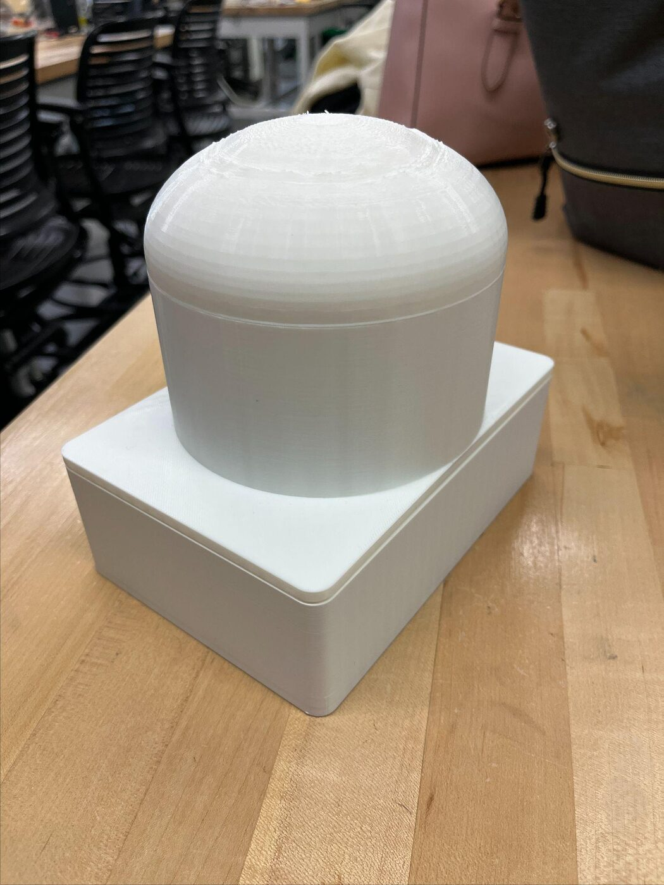

BIOE 123 · Team P13
Solar-Powered Desktop Centrifuge
with Raghad Asiri & Tawfique Ali · Jan 2025 – Apr 2025 · Stanford University
A portable, multi-modal centrifuge built to separate blood samples in under two minutes. It is designed to run entirely off-grid on solar power for low-resource field settings.
I owned the sensing and control subsystem: a Hall-effect feedback loop reading a magnet on the rotor base into a proportional controller, plus the Raspberry Pi touchscreen interface for setting speed and duration.
- Control: proportional closed-loop control from a Hall-effect sensor achieved 4.6% error against a 2000 RPM setpoint (spec was ±5%).
- Power: solar array delivers 15V / 70mA in direct sunlight, exactly what the motor needs to hit 2500 RPM outdoors and untethered.
- Interface: built a touchscreen "Centrifuge Controller" GUI (Kivy, on Raspberry Pi) so a user never has to touch the Arduino IDE.
- Iteration: went through a full V1 → V2 → V3 redesign cycle, rebuilding the rotor base, motor, and control electronics after each round of requirement testing.
4.6%speed control error
<2minto separate a sample
15Vsolar output in sunlight
Arduino
Raspberry Pi / Kivy
Hall-Effect Sensing
PWM Motor Control
CAD / 3D Printing

V3 final build, control electronics, GUI, and outdoor solar validation.